「한빛오피스 견적 상담가」에 「office」 도구를 연결합니다. 가격표로 만든 견적 초안을 선택한 워드 양식에 채우고, 미리보기와 내려받은 문서를 확인합니다.
설치본 수정이 필요합니다
이 장의 실행 화면은 아래 수정을 넣은 설치본(2026-10-30)에서 찍었습니다. 이 수정이 설치 저장소에 들어가기 전의 설치본에서는 선택한 양식 사용이나 결과 문서 열기가 되지 않을 수 있습니다. 들어가면 이 안내를 지웁니다.
- 에이전트: process-gpt-deepagents #10 — 고른 워드 양식을 채우게
- 화면: process-gpt-vue3 #237 — 결과 문서 미리보기·다운로드 주소
- 설치: process-gpt-infra-docker #1 — 결과를 올릴 저장소
초안을 실제 문서로 만듭니다#
11장에서는 견적서를 쓰는 규칙을 스킬로 가르쳤습니다. 이번에는 회사의 워드 양식을 선택하고, 견적 초안을 그 양식에 채웁니다.
이 실습에서 가격표는 금액의 근거입니다. 스킬은 작성 규칙입니다. 워드 양식은 채울 문서입니다. 「office」는 문서를 만드는 데 사용할 외부 도구입니다. 각각 준비한 뒤 한 대화에서 사용합니다.
장진영이 서버를 등록하고 「한빛오피스 견적 상담가」에 연결합니다. 이어서 한빛물산의 메쉬 의자 에어 25개와 3단 이동 서랍 25개 주문을 처리합니다. 고객에게 보내기 전에는 초안과 문서 내용을 모두 확인합니다.
따라 하기 1 — MCP 서버 등록하기#
- 설정의 「MCP 서버」를 엽니다.
- 빈 목록에서 「새 MCP 서버 추가」를 누릅니다.
- 「New MCP」 편집기의 내용을 아래 JSON으로 바꿉니다.
- 「추가」를 누르고 목록에 「Office」가 생겼는지 확인합니다.
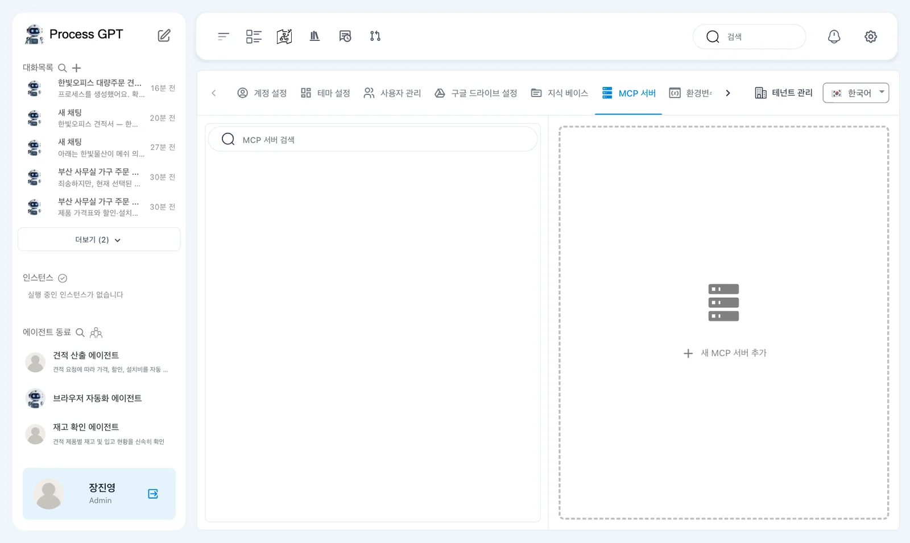
처음 열린 편집기에는 { "mcpServers": {} }가 있습니다. 아래 내용을 중괄호까지 모두 넣습니다. 서버 이름은 office입니다.
{
"mcpServers": {
"office": {
"url": "http://process-gpt-office-mcp:1192/mcp",
"type": "http"
}
}
}
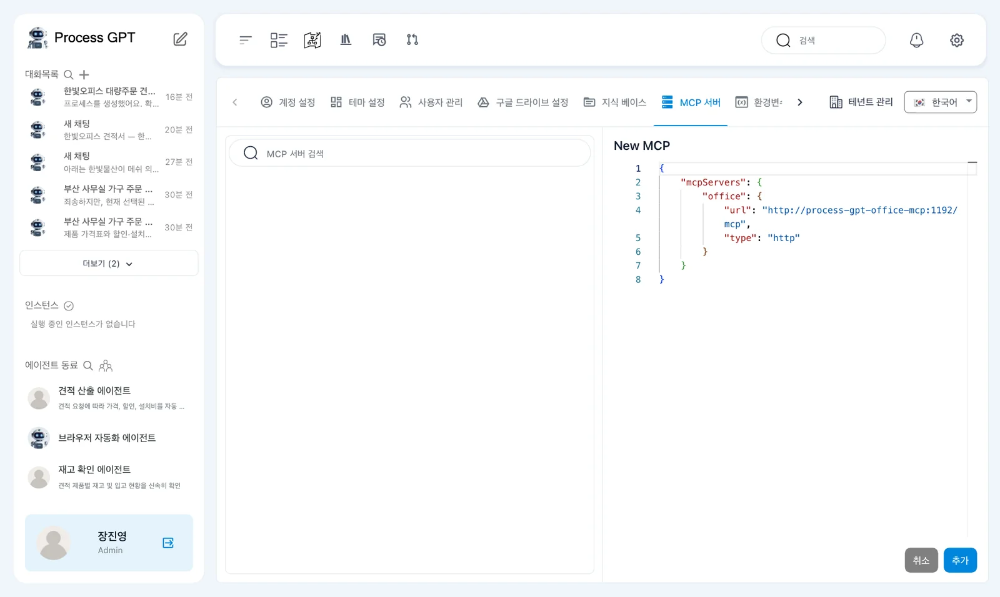
이 주소는 촬영한 설치 구성의 Office MCP 서비스 주소입니다. 브라우저에서 문서를 읽는 주소와 구분합니다. 여기서는 에이전트가 사용할 도구 서버를 등록합니다.
등록한 뒤 목록에는 「Office」·「Web Service」와 켜기 스위치가 보였습니다. 촬영에서는 서버가 켜진 상태로 저장되었습니다.
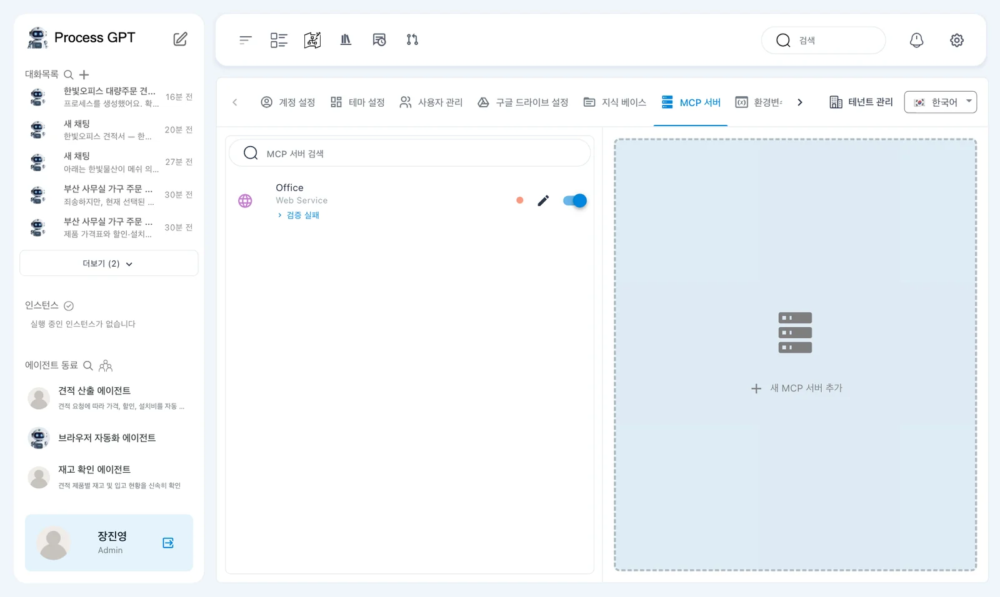
촬영에서는 「검증 실패」가 표시되었습니다
검증에 사용하는 mcp-validator 이미지가 없어 나온 표시입니다. 이 설치본에서는 표시가 남은 상태로 문서 생성이 동작했습니다. 표시만 보고 문서 생성 성공을 판단하지 않습니다. 뒤에서 실제 결과 문서가 열리는지 확인합니다.
따라 하기 2 — 에이전트의 도구 바꾸기#
서버를 등록한 다음에는 에이전트가 사용할 도구를 선택합니다. 9장에서 만든 에이전트의 도구 칸을 그대로 두지 않고 내용을 확인합니다.
- 에이전트 화면에서 「한빛오피스 견적 상담가」 이름 옆 연필을 누릅니다.
- 「에이전트 수정」 창의 「도구」 칸을 확인합니다.
- 기존의 「가격표조회」·「제안서생성」·「견적서작성」·「할인계산기」·「설치비산출」 칩을 모두 지웁니다.
- 목록에서 「office Web Service」를 선택합니다.
- 「도구」 칸의 「office」를 확인하고 「수정」을 누릅니다.
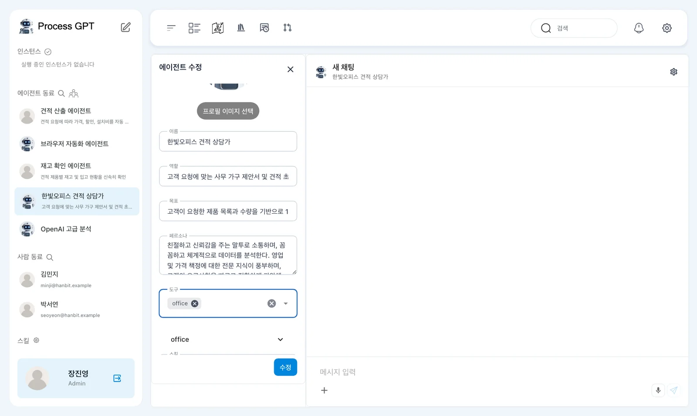
기존 다섯 이름은 에이전트 생성 때 AI가 지어 넣은 이름입니다. 해당 이름에 연결된 MCP 서버는 없었습니다. 이번에는 앞에서 등록한 서버를 목록에서 선택합니다.
스킬은 11장의 「hanbit-quote-format」을 사용합니다. 스킬을 붙였다는 사실과 외부 도구를 연결했다는 사실을 구분합니다. 문장으로 규칙을 설명하는 것과 워드 파일을 만드는 것은 다른 작업입니다.
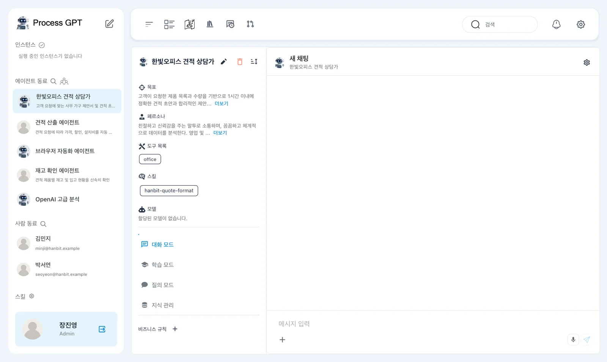
따라 하기 3 — 회사 양식 올리기#
실습 파일 한빛오피스 양식(zip)을 내려받고 압축을 풉니다. 「한빛오피스-양식」 폴더 안에 「한빛오피스-견적서-양식.docx」가 있습니다.
- 압축을 푼 폴더에서 「한빛오피스-견적서-양식.docx」를 확인합니다.
- 8장에서 문서를 올린 방법으로 「한빛오피스-양식」 폴더를 지식 베이스에 올립니다.
- 지식 베이스에 해당 폴더가 보이는지 확인하고 색인이 끝날 때까지 기다립니다.
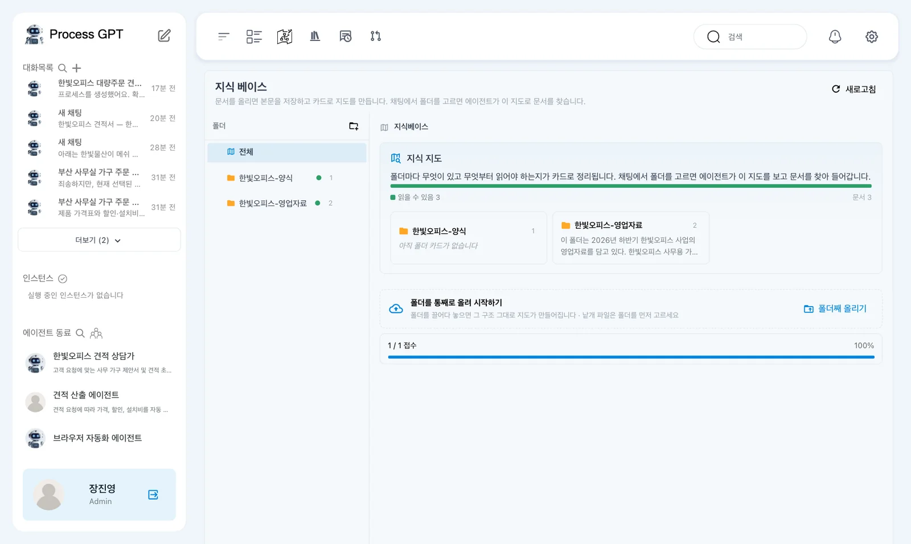
촬영에서는 약 5초 뒤 색인이 끝났습니다. 이 시간은 촬영에서 확인한 값입니다. 자신의 화면에서는 선택할 양식이 준비되었는지 확인하고 다음 단계로 갑니다.
원본 양식의 제목은 「한빛오피스 견적서」입니다. 본문은 「1. 고객」·「2. 품목」·「3. 합계」·「4. 조건」 순서입니다. 품목 표에는 「품목」·「수량」·「단가」·「할인」·「금액」 머리줄이 있고, 「한빛오피스 영업팀」이 들어 있습니다.
이 구조를 기억해 둡니다. 결과 파일에서 금액만 읽지 말고, 양식의 구역과 표 머리줄이 유지되었는지도 확인해야 합니다.
따라 하기 4 — 사용 가능한 도구 확인하기#
- 「한빛오피스 견적 상담가」에서 아래 인사를 보냅니다.
- 답에 문서 작성과 편집에 관한 설명이 있는지 읽습니다.
- 이어서 견적에 사용할 가격표와 양식을 선택할 준비를 합니다.
안녕하세요. 지금 쓸 수 있는 도구를 알려 주세요.
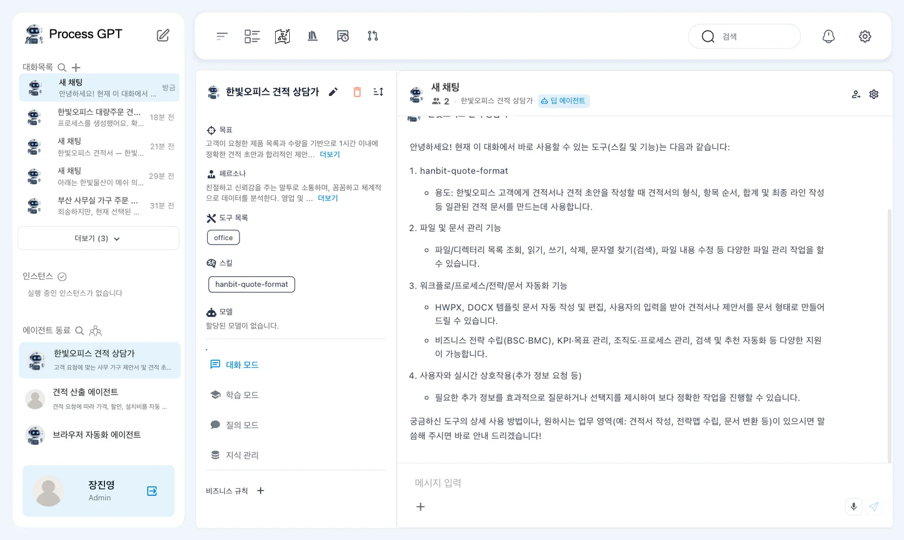
촬영에서는 「hanbit-quote-format」 스킬, 파일·문서 관리와 「HWPX, DOCX 템플릿 문서 자동 작성 및 편집」 등을 나열했습니다.
이 답은 연결 뒤의 설명을 확인하는 단계입니다. 문서가 만들어졌다는 증거는 아닙니다. 다음 단계에서 초안을 만들고, 그 뒤에 양식 파일을 지정하여 실제 문서 생성을 요청합니다.
따라 하기 5 — 가격표와 양식을 고르고 초안 만들기#
- 대화의 「＋」에서 「지식 베이스」를 엽니다.
- 「한빛오피스-영업자료」의 제품가격표와 「한빛오피스-견적서-양식.docx」를 선택합니다.
- 아래 요청을 보냅니다.
- 답의 수량, 단가, 할인과 총액을 확인합니다.
선택한 지식 베이스의 가격표 문서를 찾아보고, 한빛물산이 메쉬 의자 에어 25개와 3단 이동 서랍 25개를 서울 본사로 주문하려고 해. 견적 초안을 써 줘.
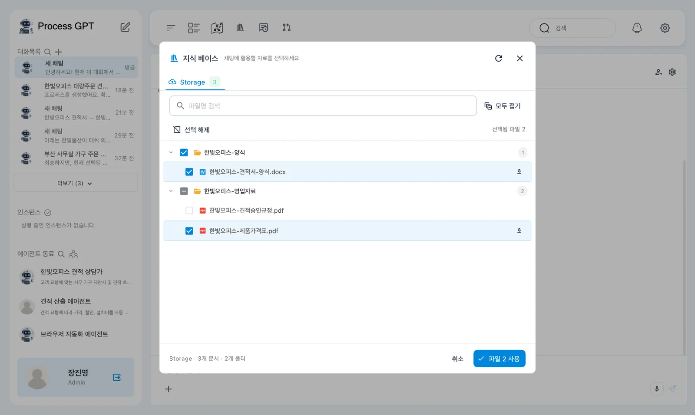
촬영에서는 약 35초 뒤 초안이 나왔습니다. 스킬에서 정한 견적 형식과 계산식이 함께 들어갔습니다. 이번 표의 금액은 할인 전 금액이었습니다.
| 품목 | 수량 | 단가 | 할인 전 금액 |
|---|---|---|---|
| 메쉬 의자 에어 | 25 | 180,000원 | 4,500,000원 |
| 3단 이동 서랍 | 25 | 95,000원 | 2,375,000원 |
두 품목의 할인 전 합계는 6,875,000원입니다. 여기에 5%를 적용한 수량 할인은 343,750원입니다. 설치비 0원을 반영한 견적 총액은 6,531,250원이며 부가세 별도입니다.
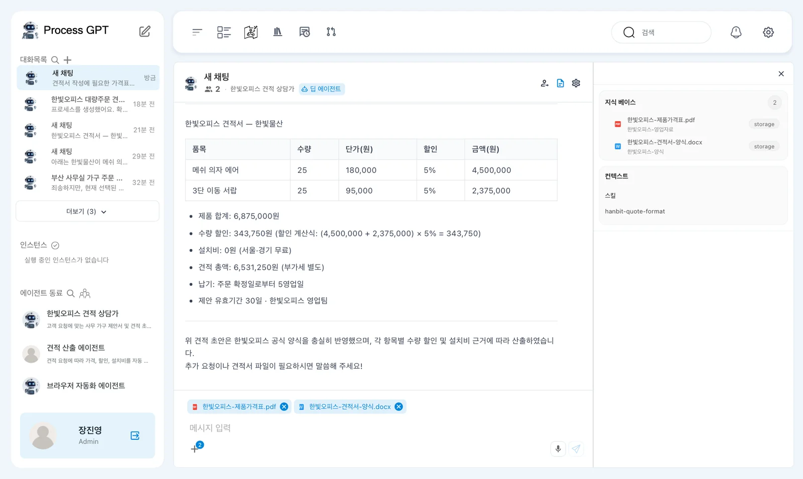
11장의 답에서는 표 금액이 할인 후 값이라 제품 합계와 기준이 달랐습니다. 이번 초안은 4,500,000원과 2,375,000원을 표에 넣어 제품 합계와 맞았습니다. 같은 에이전트의 답이라도 이번 결과를 다시 확인합니다.
초안을 확인한 뒤 파일을 만듭니다
이 단계의 답은 채팅에 나온 견적 초안입니다. 선택한 양식에 채워진 워드 파일은 다음 요청에서 만듭니다. 초안의 오류를 그대로 문서에 옮기지 않도록 먼저 금액과 고객 정보를 확인합니다.
따라 하기 6 — 선택한 워드 양식 채우기#
- 같은 대화방에서 아래 요청을 보냅니다.
- 문서 완성 답이 나올 때까지 기다립니다.
- 오른쪽에 열린 미리보기에서 고객, 품목과 합계를 확인합니다.
- 컨텍스트 패널의 「커넥터」에 「office」가 표시되는지 확인합니다.
이제 선택한 한빛오피스-견적서-양식.docx 에 방금 쓴 견적을 그대로 채워서 office 도구로 워드 파일을 만들어 줘.
촬영에서는 약 45초 뒤 「견적 초안을 한빛오피스-견적서-양식.docx 템플릿에 반영하여 워드(docx) 파일로 완성했습니다.」라는 답이 나왔습니다. 오른쪽 패널은 저절로 열렸습니다.
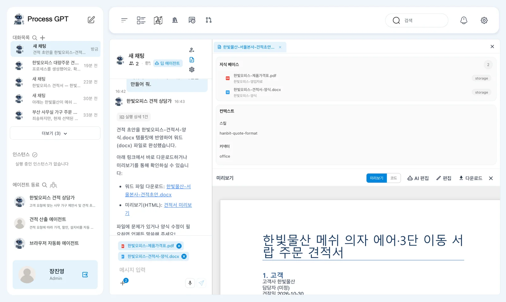
문서 제목은 「한빛물산 메쉬 의자 에어·3단 이동 서랍 주문 견적서」였습니다. 고객사는 한빛물산이며 담당자는 「(미정)」입니다. 촬영 문서의 견적일은 2026-10-30입니다.
품목에는 의자와 서랍의 수량, 단가, 할인 5%가 들어갔습니다. 금액은 초안처럼 할인 전 값인 4,500,000원과 2,375,000원입니다. 초안과 파일에서 금액 기준이 달라지지 않았는지 비교합니다.
답 속 링크는 열리지 않았습니다
촬영에서 답에 포함된 두 링크는 주소가 http://kong:8000/…로 되어 있어 열리지 않았습니다. 오른쪽 패널의 미리보기는 열렸습니다. 문서가 완성되었다는 답만 확인하지 말고 패널에서 내용을 직접 읽습니다.
따라 하기 7 — 미리보기와 내려받은 파일 확인하기#
오른쪽 패널에는 「미리보기」·「코드」·「AI 편집」·「편집」·「다운로드」가 있습니다. 이번 실습에서는 미리보기와 다운로드 결과를 확인합니다.
- 「미리보기」에서 문서의 고객과 품목을 읽습니다.
- 「3. 합계」에서 제품 합계, 수량 할인, 설치비와 견적 총액을 확인합니다.
- 아래쪽 조건과 표 머리줄이 원본 양식과 맞는지 확인합니다.
- 브라우저와 서비스가 같은 장비인 설치에서는 「다운로드」를 눌러 워드 파일을 내려받습니다.
- 내려받은 문서를 열어 미리보기와 내용을 비교합니다.
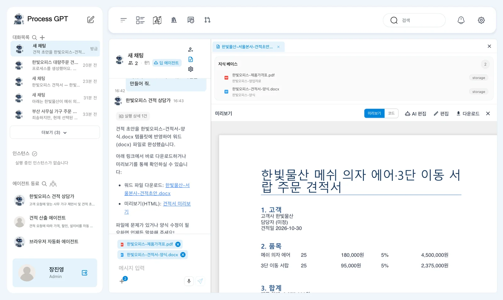
촬영에서 내려받은 문서에는 제품 합계 6,875,000원, 수량 할인 343,750원, 설치비 0원과 견적 총액 6,531,250원이 들어 있었습니다. 설치비 설명은 「서울·경기 무료」이고 총액은 부가세 별도입니다. 조건에는 납기 5영업일이 적혀 있었습니다.
문서에 적힌 조건은 가격표와 대조합니다. 에이전트가 문장을 채웠다는 사실만으로 고객과 합의한 조건이 되는 것은 아닙니다. 담당자 「(미정)」처럼 확정되지 않은 내용도 그대로 남아 있는지 확인합니다.

다운로드에는 설치 위치 제약이 남아 있습니다
다운로드는 브라우저에서 http://127.0.0.1:1192/mcp로 직접 요청합니다. 브라우저와 서비스가 같은 장비이고 1192 포트가 열린 설치에서는 동작합니다. 촬영은 Mac 브라우저와 VM 서비스가 분리되어 있어 포트 전달을 추가한 뒤 확인했습니다. 분리된 설치에서는 이 차이를 확인합니다.
촬영에서 내려받은 파일 이름은 edited---_20261030_074837.docx였습니다. 한글 파일 이름이 「---」로 깨지는 문제가 남아 있습니다. 파일 이름과 문서 내용은 따로 확인합니다.
양식을 채운 결과에도 흠이 있습니다
결과 문서에는 「4. 조건」 제목이 한 번 더 들어갔고, 품목 표의 머리줄이 빠졌습니다. 담당자는 「(미정)」으로 남았습니다. 총액이 맞아도 이 상태로 고객에게 보내지 말고, 원본 양식과 비교하여 빠진 항목과 중복을 확인합니다.
스킬·자료·도구의 역할을 구분합니다#
이번 대화에서는 세 종류의 준비물이 함께 쓰였습니다. 결과를 검토할 때도 어느 부분이 무엇을 근거로 했는지 나누어 읽습니다.
| 준비물 | 이번 실습에서 확인한 역할 |
|---|---|
| 제품가격표 | 가격·할인·설치비의 근거로 선택합니다. |
| 「hanbit-quote-format」 | 견적 초안의 작성 규칙으로 사용합니다. |
| 견적서 워드 양식 | 견적 내용을 채울 문서로 선택합니다. |
| 「office」 | 선택한 양식에 내용을 채워 문서를 만듭니다. |
도구를 연결해도 검토가 없어지는 것은 아닙니다. 초안에서는 계산을 확인하고, 문서에서는 계산에 더해 제목, 표 구조, 고객 정보와 조건을 확인합니다. 이번 결과는 파일 생성까지 동작했지만 양식 보존과 다운로드 이름에 결함이 남았습니다.
다음 장으로#
외부 도구를 등록하고 견적 상담가에 연결했습니다. 선택한 워드 양식에 견적을 채운 뒤 미리보기와 다운로드의 제약도 확인했습니다. 15장에서는 의사결정 규칙을 다룹니다. 실행한 업무의 시간과 병목은 16장에서 살펴봅니다.
확인 문제
- 기존 도구 칩 다섯 개를 지우고 「office Web Service」를 선택한 이유는 무엇인가요?
- 채팅의 견적 초안이 나온 뒤 워드 파일을 만들려면 무엇을 요청하나요?
- 결과 문서를 고객에게 보내기 전에 어떤 문제를 확인해야 하나요?
답
- 기존 이름은 AI가 지어 넣었으며 연결된 MCP 서버가 없었습니다. 이번에 등록한 실제 서버를 에이전트의 도구로 선택합니다.
- 같은 대화에서 선택한 「한빛오피스-견적서-양식.docx」에 방금 쓴 견적을 채워 「office」 도구로 워드 파일을 만들어 달라고 요청합니다.
- 금액과 조건을 대조하고, 「4. 조건」 중복, 표 머리줄 누락, 담당자 「(미정)」을 확인합니다. 답 속 링크와 다운로드 경로의 제약, 깨진 한글 파일 이름도 확인합니다.